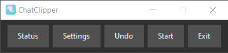
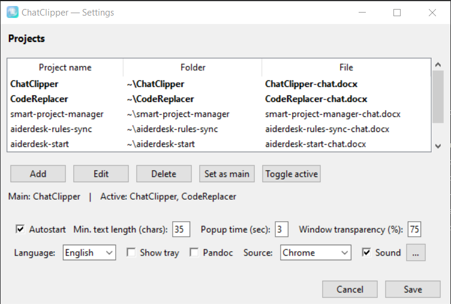
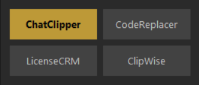
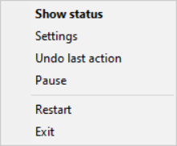

ChatClipper — user guide
Copyright (©) 2026, Vladimir Baykov. All rights reserved.
ChatClipper is a small Windows utility that helps you keep a record of your chats with AI assistants (DeepSeek, ChatGPT, Qwen, GLM and similar) in a single tidy Word file. No more manual copy-paste — the app does it for you.
Advantages
- You save only what you need: selected replies, key fragments, code snippets — not the whole dialogue tree.
- No manual copy-paste: one click on "Copy" in the browser and the text is already in your Word file.
- Each project is a separate file, so one document holds just one topic.
- Formatting is preserved: headings, lists, bold, code.
- Runs quietly in the background — does not slow the system down.
- Interface available in 5 languages.
Who it is for
Anyone who works with AI chat tools often and wants to keep history: developers, analysts, writers, researchers, students.
Installation
The easiest way is to run the installer.
- Download
chatclipper-setup.exe from the latest release page on GitHub.
- Double-click it and follow the installer prompts.
- After installation, the ChatClipper control panel — a small window with buttons — appears in the bottom-right corner of the screen.
No Python or other software is required — everything is bundled.
First launch
After installation and launch you will see the control panel — this is the main window of the app by default.

The panel has five buttons:
- Status — show the status window (current main project and list of active projects).
- Settings — open the settings window.
- Undo — undo the last write and move it to another project.
- Start / Pause — enable or pause clipboard tracking.
- Exit — close ChatClipper. Single click exits, double click restarts.
The panel can be dragged with the mouse anywhere on the screen. The app remembers its position and opens there next time.
Settings window
Opened by the Settings button. Here you define projects and behaviour.

At the top is the list of your projects. For each you see: name, folder and file.
Below the list are the project buttons:
- Add — add a new project. A dialog opens where you enter name, folder and file name. You can also pick the format (Word, Markdown, plain text).
- Edit — change the selected project.
- Delete — remove a project.
- Set as main — make the selected project the main one. Writes go there by default.
- Toggle active — enable or disable a project. Inactive projects are not shown in the copy popup.
The line below the list shows the main and active projects.
Then come the options:
- Min. text length (chars) — minimum length of copied text. Too-short fragments (by default less than 35 characters) are ignored.
- Popup time (sec) — how long the project picker stays on screen before auto-close.
- Window transparency (%) — transparency of the project picker.
- Autostart — start ChatClipper together with Windows.
- Show tray — switch to a tray icon instead of the panel (see the "Tray" section below).
- Pandoc — use Pandoc to convert Markdown to Word (if installed).
- Source — copy source: Chrome or another app.
- Sound — ticking sound that plays while waiting for a copy. Click "..." to choose from available sounds.
- Language — interface language.
At the bottom are Save and Cancel. If you changed something and closed the window, ChatClipper asks whether to save.
Status window
Opened by the Status button (or shown automatically at startup). It shows the current state.

- The title is the name of the main project where writes go.
- The list of active projects — at most 9 items.
- Clicking any of them makes it the main project — all subsequent writes go there.
- When the app is paused, a red PAUSE stamp appears over the window.
The window can be dragged. If left alone, it closes automatically after a few seconds.
How to use
- Open Settings and add at least one project: name, folder, file. For example, project "DeepSeek", file "deepseek-chat.docx".
- Mark it as main (Set as main).
- Open the AI chat in Chrome.
- Select the fragment and press Ctrl+C (or click "Copy" in the chat UI).
- A popup appears in a second with the project choice — click the one you want, or let it auto-close (the main project is used).
- Open the Word file — the text is there (writes are delayed by about 5 seconds).
Interface language
By default the interface is in English. To switch to Russian, German, Spanish or Japanese:
- Settings → Language → pick the language.
- Click Save. A dialog asks to restart the app — confirm.
- After restart the interface is in the chosen language.
On first launch ChatClipper tries to match the Windows locale. If the language is not available, English is used.
Tray
If you prefer to keep ChatClipper in the system tray (near the clock) instead of the panel:
- Settings → Show tray → check the box.
- Click Save and confirm the restart.
- After restart a tray icon appears instead of the panel.

Right-click the icon to open the menu: Status, Settings, Undo, Pause, Restart, Exit.
To go back to the panel — uncheck Show tray in settings.
Good to know
- Writes are delayed by about 5 seconds — for performance reasons.
- If the Word file is open in an editor, new content will not show up on the fly — close and reopen the file.
- Do not edit the file by hand between a write and an undo — otherwise Undo will remove the wrong paragraphs.
- The app does not connect to the internet and sends no data.
FAQ
Do I need to pay for anything?
No. ChatClipper is free and distributed under the MIT license.
Where are the notes stored?
Wherever you specified when creating the project. By default — in the project folder.
Can I keep several chats at once?
Yes. Each project is a separate file. Switch projects in settings, in the status window, or via the popup.
What if I accidentally deleted the file?
Create the project again — use the same file name and folder, and ChatClipper will continue writing to it.
How do I uninstall?
Via Windows "Apps & features". Your settings and project files are removed separately, by hand — they live outside the app folder.
Is it safe to run in the background?
Yes. ChatClipper does not connect to the internet, sends no data anywhere and reads nothing but the clipboard at the moment of a copy.
ChatClipper — docs/manual-en.html